| 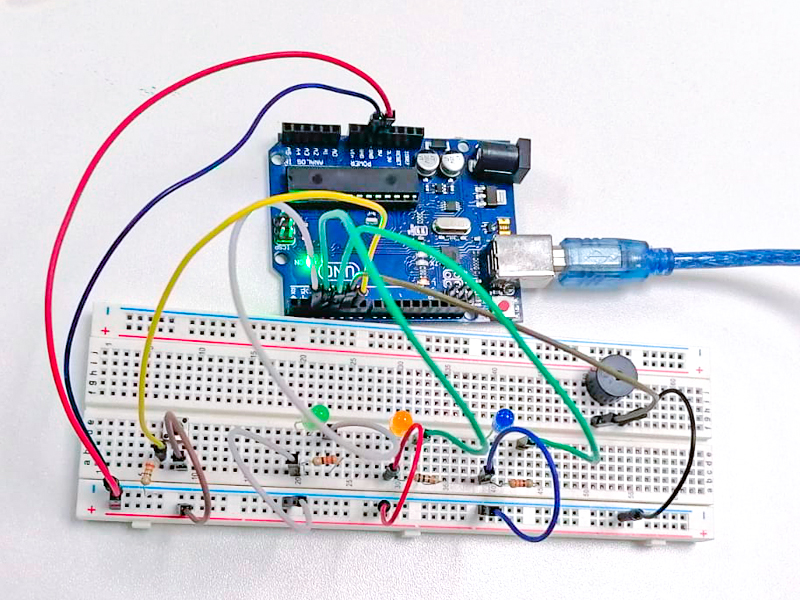 |
Circuito fusionado con múltiples actuadoresSe diseñó un nuevo circuito fusionando los diversos componentes utilizados en el circuito anterior, con el objetivo de lograr que tres luces LED se enciendan de manera intermitente con diferentes duraciones, y que el buzzer emita un sonido cada vez que una de las luces se encienda. Todo este proceso debería iniciarse o detenerse al presionar el pulsador. |
Creando melodías con el BuzzerExprimentamos con el buzzer para generar melodías personalizadas según los parámetros dados, y conseguimos crear composiciones musicales interesantes que pueden ser útiles en una variedad de proyectos distintos. |
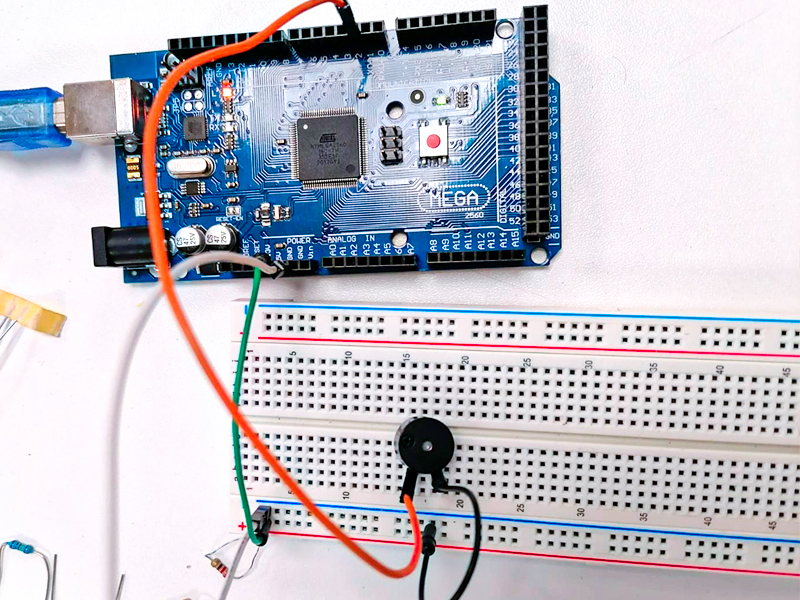 |
| 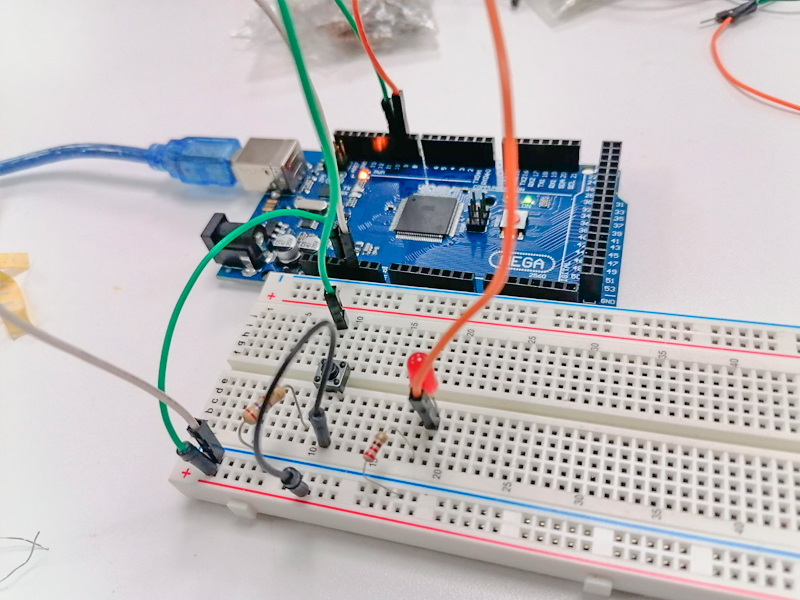 |
Utilizando el pulsador en ArduinoPusimos en práctica los conocimientos adquiridos en Thinkercad acerca de cómo utilizar un pulsador en Arduino, lo que nos habilitó para encender la luz LED que habíamos instalado en el protoboard de manera precisa y eficiente. |
Incrementando la potencia de luz LEDA partir de los circuitos previamente construidos, exploramos la variación en la intensidad y potencia de las luces LED empleando un potenciómetro. |
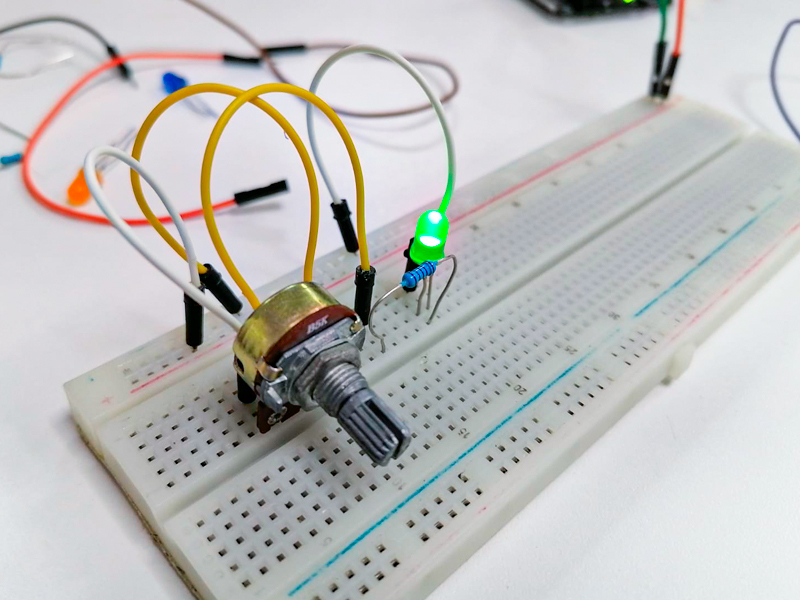 |
| 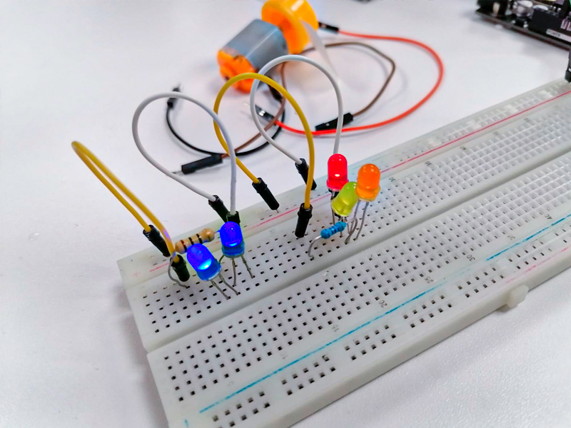 |
Otras formas de encedido de luces LEDSe busco otra forma de armar el circuito y lograr el encendido de las luces en diversos momentos y con distintas duraciones, lo que resultó en una interesante forma de iluminación. |
Encendido de luces LED alternasA través del circuito logramos conseguimos intercambiar el encendido de las luces en diversos momentos y con distintas duraciones, lo que resultó en una iluminación dinámica y variable en el circuito. |
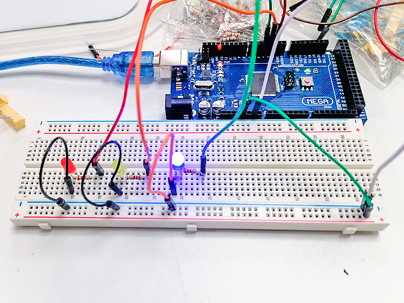 |
 |
Circuito semáforo en ArduinoAplicamos los conocimientos adquiridos en Tinkercad al llevar a cabo la creación de un semáforo utilizando luces LED, donde se requería que las tres luces se activaran de forma sincronizada. |
Pulsardor con ArduinoAprendimos acerca del uso del pulsador en Arduino, lo que nos permitió encender la luz LED instalada en el protoboard de forma controlada y efectiva. |
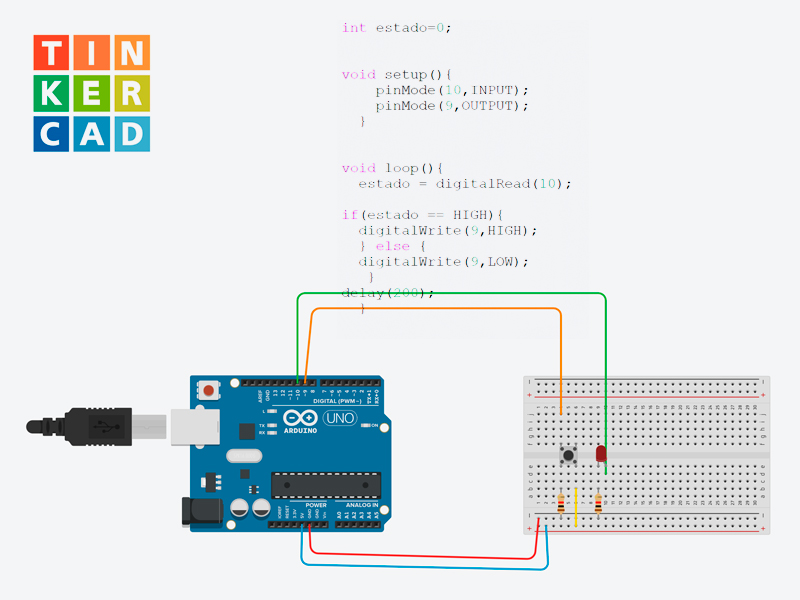 |
| 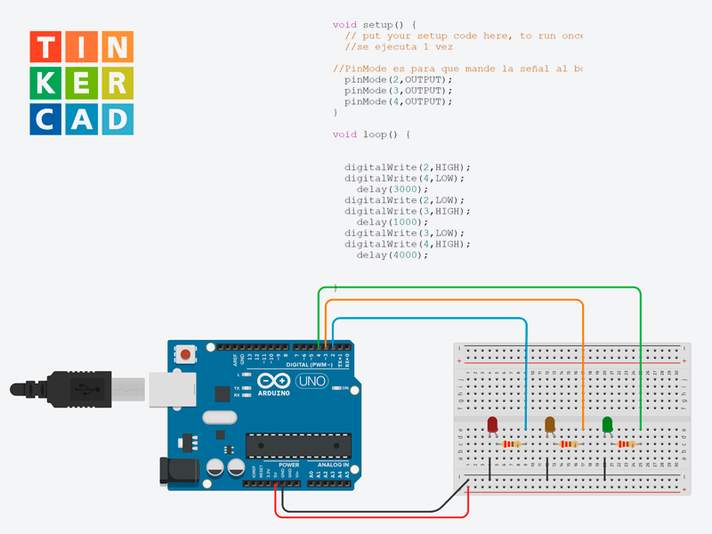 |
Circuitos con luces LEDLlevamos a cabo tres circuitos con luces LED. Comenzamos con un circuito que utilizaba una sola luz LED, luego avanzamos a dos y finalmente a tres luces LED. A medida que progresábamos, logramos que las luces se encendieran y apagaran de manera intercalada, creando un efecto similar al de un semáforo, lo que añadió un nivel adicional de dificultad y complejidad al proyecto. |
Baterías en ThinkercadProbamos los diferentes tipos de baterías en thinkercad como las convencionales como batería alcalinas y otras como las de limón, patata y otras que generan electricidad utilizando frutas o verduras como electrolitos y metales como electrodos. |
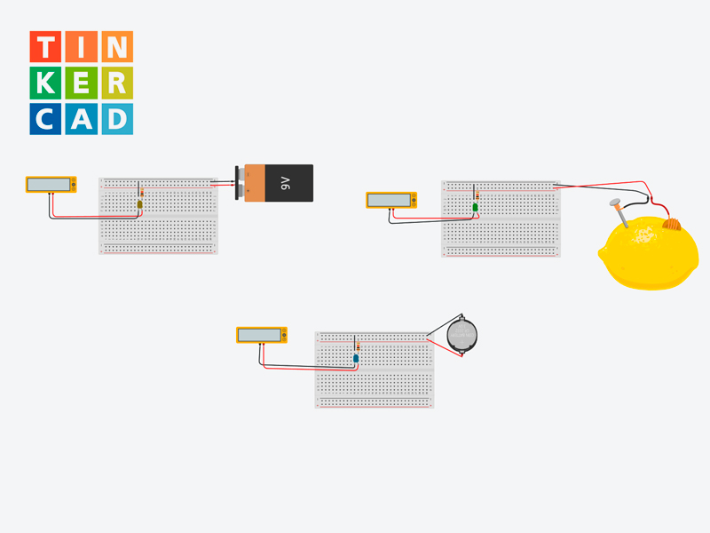 |
| 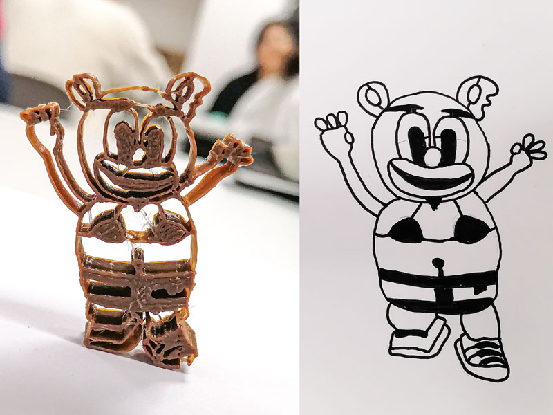 |
Oso Gomita: La Magia del 3DEn mi primera clase en laboratorio, con mi grupo de compañeros ingresamos en el mundo de la impresión 3D y decidimos crear un oso de goma, pero no uno común, ¡sino uno con lencería y un toque de humor! Tras diseñar nuestro oso de gomita con papel y lápiz, este cobró vida, desatando risas y carcajadas. Lo que comenzó como una tarea también se convirtió en un rato de diversión. |
EcoTips: Divirtiéndonos cuidando el planetaEn equipo ideamos un emocionante proyecto llamado "ECOTIPS", un canal de YouTube dirigido a niños, donde ofrecemos consejos divertidos y educativos sobre el cuidado del medio ambiente y los Objetivos de Desarrollo Sostenible (ODS) relacionados con los ecosistemas terrestres. Para esto creamos una infografía explicando este proyecto. 🌍🌱🗺️ |
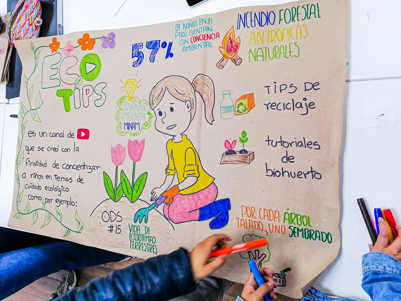 |
| 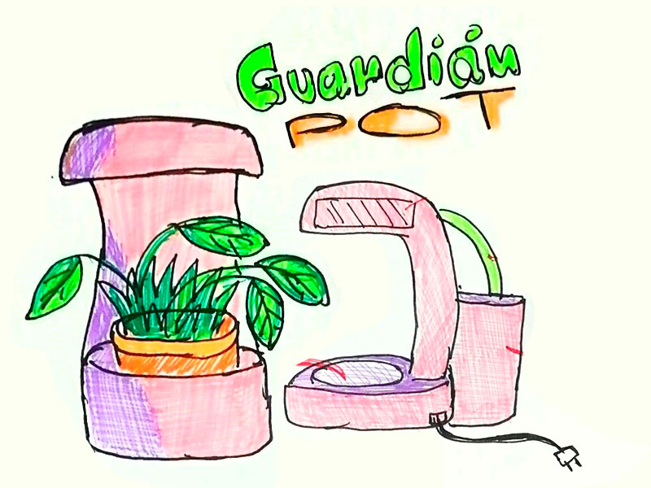 |
Guardian POT: Cuidando tus plantasEl Portamacetero Inteligente Guardian POT es una idea de producto innovador diseñado para transformar la maner en que cuidamos nuestras plantas. ¿Cómo funciona? Es simple. Este dispositivo incorpora sensores de humedad en la maceta y utiliza la última tecnología de inteligencia artificial para determinar cuándo tus plantas necesitan ser regadas. |